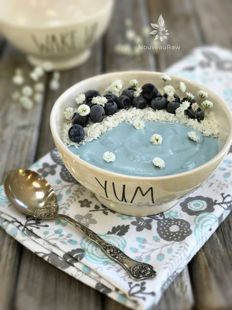

Blue Majik Coconut Breakfast Pudding | Raw, Vegan, Gluten-free, Nut-free, Alkaline
 Before I hop straight into this posting, I want to make a confession… I have never liked the idea of eating blue food (blueberries not included). It just never seemed appealing or appetizing. But my taste buds have experienced a change of heart.
Before I hop straight into this posting, I want to make a confession… I have never liked the idea of eating blue food (blueberries not included). It just never seemed appealing or appetizing. But my taste buds have experienced a change of heart.
I am all about making sure that each bite I take is full of nutrients and flavor. Where there is one… the other must follow. And much to my delight, this simple, quick, and easy pudding came together with both requirements.
Blue Majik
Blue Majik is a proprietary and chemical-free extract of spirulina. It is made up primarily of phycocyanin (from the Greek word for algae, “phyco,” and the Greek word for blue, “cyan.”) Phycocyanin is effective as an anti-inflammatory, immune enhancer, and a superb detoxifier for the kidneys and liver.
When was the last time you expressed a bit of love to that liver of yours? If you are into multitasking, then you really ought to get to know your liver, because it too multi-tasks… juggling over 500 functions in the body! Weighing in at 3 pounds, it is a powerhouse of activity.
The liver is made up of two large sections: the right and the left lobes. The gallbladder sits under the liver, along with parts of the pancreas and intestines. Together these organs work together to digest, absorb, and process food. The liver’s main job is to filter the blood coming from the digestive tract, before passing it to the rest of the body. It spends its time busy detoxifying chemicals and metabolizes drugs that we put into our system. So just in these few little sentences, you can see that loving that liver of our is vital.
Let’s get back to the Blue Majik. it’s the only certified organic blue spirulina in the World. It is cultivated from the pristine Klamath Lake in Oregon–my home state! I sense a field trip coming my way. :) oooooh Bobbbbbby! (sings) Should I now be sorry that that song is now stuck in your head too? Naw.
Nutritionally, it provides an absolutely balanced combination of macro and micronutrients, vitamins, minerals, amino acids, and essential fatty acids. It helps to decrease inflammation responses after physical activities and aids in healthy joints. (1)
Tastewise, much like spirulina, Blue Majik has an earthy flavor (though the taste is more subtle). It can easily blend into smoothies, breakfast bowls, dips, and spreads. But just start with a small amount and add more to taste. Another trick of the trade is to add a squeeze of lemon juice to the recipe to balance out the earthy flavor of Blue Majik. For me, I didn’t see the need. Even after adding two capsules into the recipe, I couldn’t taste it. What a wonderful way to bring more nutrients into my day. I hope you give it a try. I would love to hear if you do. Blessings, amie sue
Topping:
- Blueberries
- Shredded coconut
- Baby’s breath flower
Preparation:
- In a high-powered blender combine: coconut meat, liquid, Blue Majik, and sweetener. Blend until creamy.
- I used water to blend the ingredients together. You could also use coconut water, almond milk, coconut milk, etc.
- Use as much or as little liquid as you want. Keep in mind that as the pudding sits in the fridge, it thickens.
- Start by blending in 1 capsule of Bleu Majik, blend, and taste. If you don’t really taste it, add another capsule. The goal isn’t to taste it necessarily but to get in as many nutrients as possible. Do not throw the whole capsule in the blender, just the contents of the capsule.
- To sweeten, I used a squirt of NuNatural liquid Stevia. Use whichever sweetener you like.
- After it is blended, enjoy right away or place in an airtight container and chill. It will keep 2-4 days.

© AmieSue.com